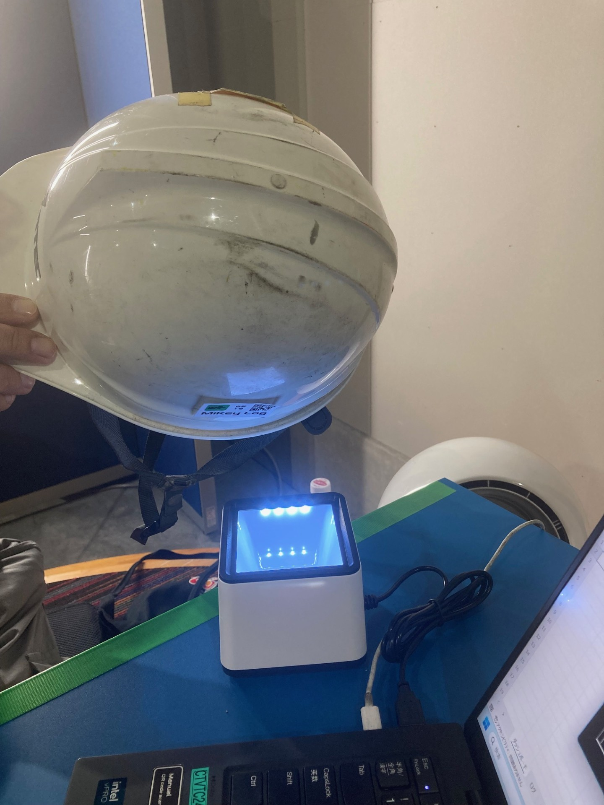
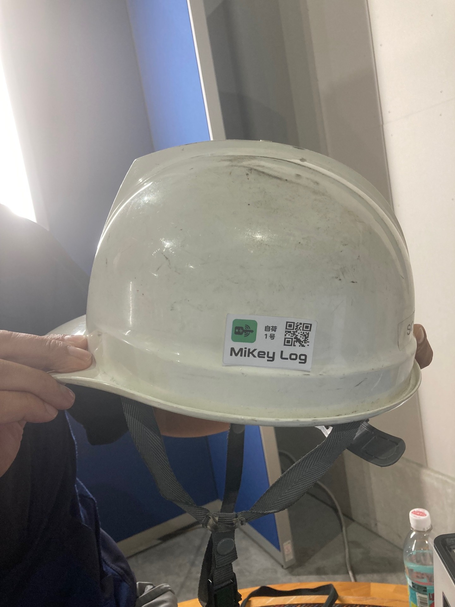

🗝️ MiKey Log System
〜 マイキーログの使い方 〜
①QRコードをスキャンしよう！ キーボックス付近にあるPCに繋がれた
QRコードリーダーに、
事前に配布されたQRコードをかざして下さい

（ヘルメットに貼り付けておくと便利です）

②PCに表示されている画面を確認して下さい。
正常なら画面が緑色、
異常なら赤色に変化します
画面が緑色になった
キーボックスからカチッと音が鳴り
開錠のLEDが緑色になったら
キーボックスの鍵が外れますので
ツマミを持って
扉を開き15秒以内に
乗車したい番号の鍵が刺さっている
ピンを抜いて
手を放し扉を閉めて下さい。
扉が閉まりきらなかった場合は半ドアの
赤色LEDが点滅しますので
再度QRコードスキャンして開錠して
再チャレンジしてみて下さい
画面が赤色になった
警告音がなった場合には
QRコードを貸与された
管理者へ、御連絡下さい。
③鍵の取り出し方
乗車したい番号のキーボルダーが付いた
ピンを上へ引き抜く感じで取り出して下さい
④鍵の返却
開錠時同様にQRコードを読み取り開錠して
ピンを借りた時と同じ場所へ
カチッとなるまで差し込んで下さい。
15秒以内に鍵を戻し扉から
手を放し閉めて下さい。
時間内に戻せなっかたら再度
QRコードを読み取る所から
チャレンジしてみて下さい。
鍵を返却し扉を閉めて鍵と同じ番号の
LEDが緑色に点灯すれば、完了です。
それ以外の反応が見受けられた場合は
管理者へお問い合わせ下さい。
モノづくり工房